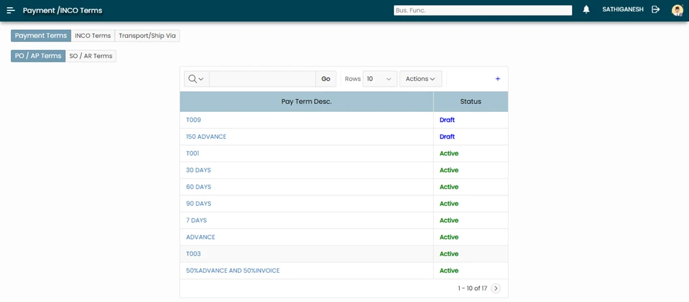
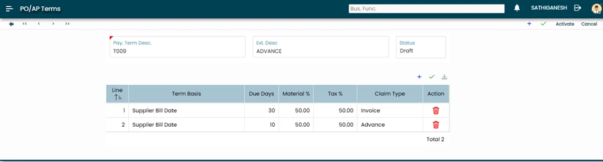
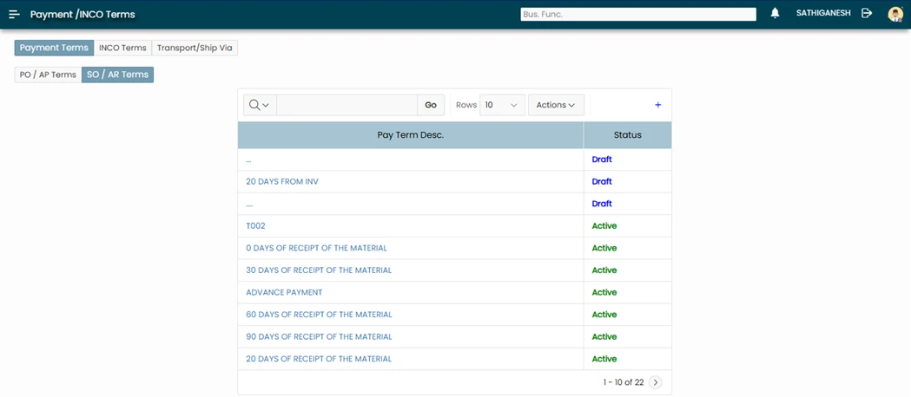
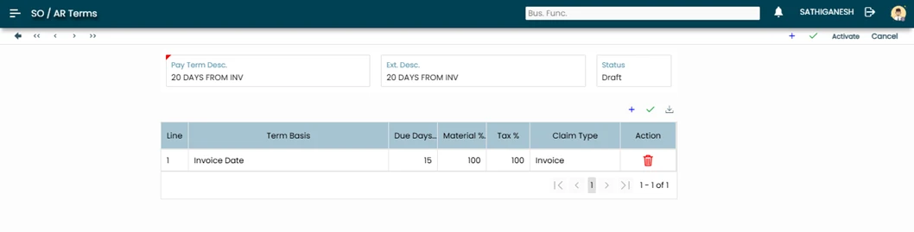
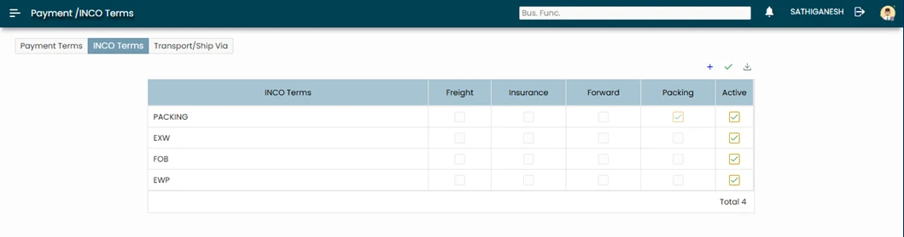
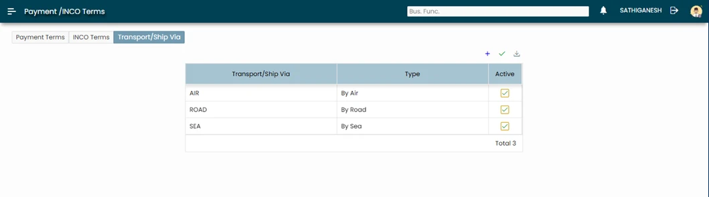

<div data-category="Financials" data-title="Payment/Inco Terms" data-updated="December 01, 2025" data-contributors="RoadmapIT" data-breadcrumb="Home,Financials,Payment/Inco Terms">
  <div class="page-content">
    <p>This screen is used to create Payment/INCO Terms.</p>
    <h5>Navigation path:</h5>
    <h3 class="fs-5 fst-italic">Option: 1</h3>
    <p class="fs-6">
      Type CFG0010 in the search box and click on the
      <strong>GO button.</strong>
    </p>
    <h3 class="fs-5 fst-italic">Option: 2</h3>
    <p class="fs-6">Setup \ Payment/INCO Terms</p>
    <h2>Payment Terms</h2>
    <p>This screen is used to enter the conditions under which a seller will have to complete a sale. Typically, these terms specify the period allowed to a buyer to pay off the amount due, and may demand cash in advance, cash on delivery, a deferred payment period of 30 days or more, or other similar provisions.</p>
    <h2>PO/AP Terms</h2>
    
    <ul style="list-style-type: none; align-content: center">
      <li class="mouse-icon">
        Click
        <i class="bi bi-plus fs-4 mx-2 text-primary"></i>
        to create a new Term.
      </li>
    </ul>
    
    <ul style="list-style-type: none; align-content: center">
      <li class="mouse-icon">Enter the Term Description.</li>
      <li class="mouse-icon">Enter the Extended Description.</li>
      <li class="mouse-icon">
        Click
        <i class="bi bi-check-lg fs-4 mx-2 text-success"></i>
        to save
      </li>
      <li class="mouse-icon">
        Click
        <i class="bi bi-plus fs-4 mx-2 text-primary"></i>
        in Line Items to create the Term Basis.
      </li>
      <li class="mouse-icon">Select the Term Basis. It might be GRN Date, Supplier Bill date , Bill Booking date and Others</li>
      <li class="mouse-icon">Enter the Due days.</li>
      <li class="mouse-icon">Total Due % must be equal to 100%.</li>
      <li class="mouse-icon">After entering the details, click on Activate button and thus the Payment term gets activated.</li>
      <li class="mouse-icon">Cancel button is used to cancel the payment term and the status will be changed to Cancelled.</li>
    </ul>
    <h2>SO/AR Terms</h2>
    
    <ul style="list-style-type: none; align-content: center">
      <li class="mouse-icon">
        Click
        <i class="bi bi-plus fs-4 mx-2 text-primary"></i>
        to create a new SO/AR Terms
      </li>
    </ul>
    
    <ul style="list-style-type: none; align-content: center">
      <li class="mouse-icon">Enter the Term Description.</li>
      <li class="mouse-icon">Enter the Extended Description.</li>
      <li class="mouse-icon">Select the Term Basis. It might be Invoice Date, Receipt date, Sub Invoice/Pulling Date, LR Date and Others.</li>
      <li class="mouse-icon">Enter the Due days.</li>
      <li class="mouse-icon">Total Due % must be equal to 100%.</li>
      <li class="mouse-icon">After entering the details, click on Activate button and thus the Payment term gets activated</li>
      <li class="mouse-icon">Cancel button is used to cancel the payment term and the status will be changed to Cancelled.</li>
    </ul>
    <h2>INCO Terms</h2>
    <p>The INCO terms rules or International Commercial Terms are a series of pre-defined commercial terms published by the International Chamber of Commerce (ICC) that are widely used in International commercial transactions or in procurement processes. A series of three-letter trade terms related to common contractual sales practices, the INCO terms rules are intended primarily to clearly communicate the tasks, costs, and risks associated with the transportation and delivery of goods.</p>
    
    <ul style="list-style-type: none; align-content: center">
      <li class="mouse-icon">
        Click
        <i class="bi bi-plus fs-4 mx-2 text-primary"></i>
        to create a new INCO Term.
      </li>
      <li class="mouse-icon">Enter the INCO Terms Description.</li>
      <li class="mouse-icon">Select any expense checkbox like Freight, Insurance, Forward and Packing.</li>
      <li class="mouse-icon">
        Click
        <i class="bi bi-check-lg fs-4 mx-2 text-success"></i>
        to Save the Entry.
      </li>
    </ul>
    <h2>Transport/Ship Via</h2>
    <p>This screen is to enter the mode of Transport of Goods from the supplier.</p>
    
    <ul style="list-style-type: none; align-content: center">
      <li class="mouse-icon">
        Click
        <i class="bi bi-plus fs-4 mx-2 text-primary"></i>
        to create a new Transport/Ship via.
      </li>
      <li class="mouse-icon">Enter the Transport/Ship Via Description.</li>
      <li class="mouse-icon">Select the Type from the list item.</li>
      <ol class="mt-0 ms-3">
        <li class="ps-2">By Air</li>
        <li class="ps-2">By Courier</li>
        <li class="ps-2">By Road</li>
        <li class="ps-2">By Sea</li>
        <li class="ps-2">Not Applicable</li>
      </ol>
      <li class="mouse-icon">
        Click
        <i class="bi bi-check-lg fs-4 mx-2 text-success"></i>
        to Save the Entry.
      </li>
    </ul>
  </div>
</div>
